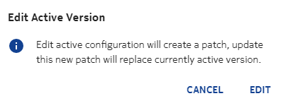
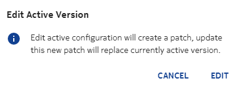
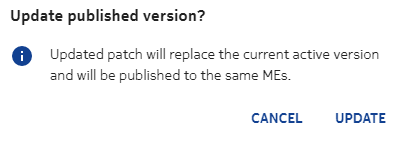
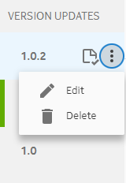

This section describes how to create and delete a patch fix.
Creating a patch fix
A patch fix can be created only for a latest published active version. The procedure to create a patch is as follows:
- Go to the latest published active version, and click
 . Select
Edit active version. Edit Active Version dialog box appears as
show in the following image:
. Select
Edit active version. Edit Active Version dialog box appears as
show in the following image: - Click EDIT.
- Edit the components or attributes of the latest published active version, and save the updates. A patch fix is created.
- To update the patch fix, click (Update published version) icon. Update published version dialog box appears as show in the following image:
- Click UPDATE. The patch fix is published and it overrides (replaces) the previous version.
- To create a new patch fix, click , and edit the latest published active
version.This option is visible only after the first patch fix is updated.
 Note:
Note:
Deleting a patch fix
- To delete a patch fix, click against the patch fix as show in the
following image:
- Select Delete. The patch fix is deleted.The patch fix can be deleted only when it is in DRAFT state. When a patch fix is published, the option to delete it is disabled.Note: